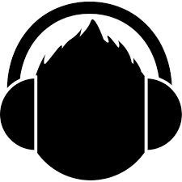

Soda Stereo fue una banda de rock argentina, formada en Buenos Aires en el año 1982 por Gustavo Cerati (voz, guitarra), Héctor «Zeta» Bosio (bajo) y Carlos Alberto Ficicchia «Charly Alberti» (batería), considerada una de las más influyentes e importantes bandas iberoamericanas de todos los tiempos y una leyenda de la música latina. La banda tuvo un papel muy importante en el desarrollo y la difusión del rock iberoamericano, rock en español durante las décadas de 1980 y 1990. Fueron el primer grupo de habla hispana en conseguir un éxito masivo en Latinoamérica. Soda Stereo ha encabezado las listas de todos los tiempos en su nativa Argentina, donde se establecieron varios récords de ventas de discos y asistencias a conciertos.
Ha ganado varios premios a lo largo de su trayectoria como el Grammy a la Excelencia Musical en Las Vegas, otorgado por la Academia Latina de la Grabación, que entrega los Premios Grammy Latinos; el Premio a la Trayectoria en la entrega de los Premios Clarín Espectáculos 2009 y el Premio Konex en varias oportunidades, incluyendo el de platino en 1985 como «mejor instrumentista» / «conjunto de rock» de la historia en la Argentina. En 2010 fue declarado Ciudadano Ilustre de la Ciudad Autónoma de Buenos Aires por la Legislatura Porteña y en 2013 recibió el título de Doctor Honoris Causa de la Universidad Nacional de General San Martín. En los Premios Gardel 2018 (organizado por la Cámara Argentina de Productores de Fonogramas y Videogramas- CAPIF) se impuso en seis de los siete categorías en los que estaba nominado, incluida Álbum del Año por su disco "Random". Tras 15 años, el ex Sui Generis volvió a ganar la estatuilla de oro, siendo esta la tercera vez que recibe esta distinción.